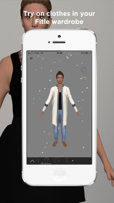

Fitle_iOS
6th Mar 2017
Fitle is an online shopping sizing solution provider located in Paris France. It provides a comprehensive sizing solution to its clients which include many influential French online shopping sites. I integreted into Fitle mobile developping team. My job is to develop new features for the Fitle iOS App as well as maintain the code and debug. The main feature of the app is that it displays a 3D model created according to the user`s measurements data, and shows how it looks with different clothes of which the use chose. OpenGL ES,Swift3/OC,3rd party frameworks are involved in the development.

Fitle 是我实习时工作的公司。是一个在巴黎的初创公司，为其他网购平台提供服装大小的解决方案。其客户公司包括最有影响的法国网购平台。 我的工作主要是在移动开发团队里负责开发和运营其iOS应用。其应用的最主要卖点就是，根据用户个人身材数据，生成个人化的3D模型，并且可以在模型上展示穿上各种衣服之后的效果和和身情况。 其设计的主要技术包括OpenGL ES，Swift3/OC，以及其他第三方库等。
VimTutorialInChinese
15th Oct 2016

At the time when I was learning Vim, I was annoyed by all those command shortcuts that need to be memoried. I was certain that there is a more intuitive way to remember all those commands. And I found it after came across a blog article tutorial which use vim command as a language. That was when I wanted to translate that article into Chinese. See link to my translation above.
之前在学Vim用法的时候，苦于没有很好的方法记住Vim众多的命令快捷键用法，我一直认为Vim应该有更能让人理解的方法记住快捷键命令。直到我发现了一篇博文，通过把Vim命令当然一组语言来学习和记忆命令，让我豁然开朗，于是便有了把此博文翻译的想法。 以下是我的译文地址，在文章头上特别附上另一篇很有用的配置Vim的文章，供诸君参考。
Dou Ban Radio
10th Oct 2016
DouBanRadio is a self-initiated swift project by myself, aiming to improve my ability in developing apps.DouBanRadio implement DouBanMusic API to provide quality straming music service. This is a prototype app. It can play streaming music from the service, get certains information about the music been playing, list out certains music channels and the music in those channels, playing music in background and so on.


DouBanRadio是我自己尝试做的swift项目，通过参考书、说明文档和视频基本达到流广播播放器的基本功能。此app应用MVVM构建，包括了Alamofire和SwiftyJSON两个库。通过使用豆瓣Radio的api，实现了歌曲列表的获得，歌曲播放、显示专辑页以及动画效果。
About Me
13th Sep 2016
我是Leo Weng，活跃在GitHub上，时常在自己博客上写写东西。本科在南京某重点毕业之后我现在住在巴黎自我提升和沉淀。我不仅仅是一个喜欢极客文化的理工男，更是喜欢优雅的技术产品的人。也希望自己能有优雅且好用的技术产品问诸于世。如您对我个人或工作上有兴趣，可以邮件联系我。
I am Leo Weng,find me on GitHub and my blog. After graduated from my university in Nanjin/China, I now live in Paris to continue my education as well as to improve my skills in tech. I am not only a engineering graduates who likes geek culture but also a guy fund of art and the elegance of simplicity. I would like to design my app which combined technology and liberal art together. If you find my projects interesting,feel free to contact me via email.